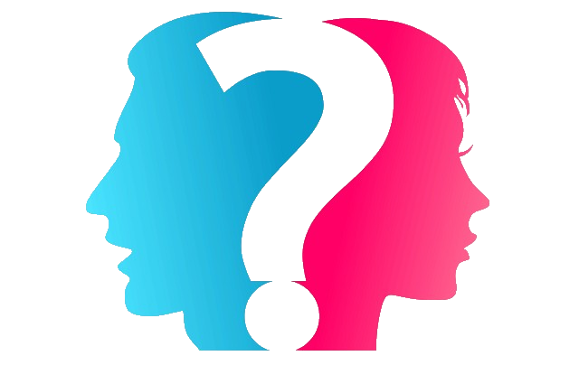
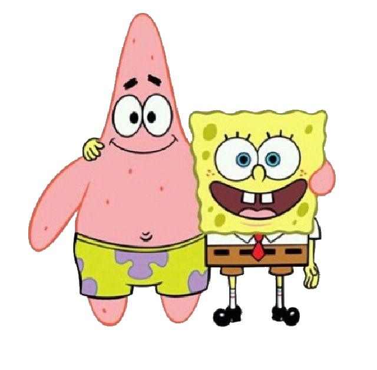

Sexuality is a person's sexual orientation or preference.
It composed of different types:
Heterosexual, Homosexual, Bisexual, Pansexual, Queer, and Asexual.
Heterosexual a.k.a straight is the most accepted form of sexuality.
Homosexual means liking someone of the same sex (male=male, female=female).
Bisexual is the attraction to both and different sex.
Pansexual people are attracted to all gender includes male, female,
gender-queer, transgender and other gender identities.
A queer person does not conform to traditional gender or sexuality norms.
While, asexual experience no or little sexual attraction.
Major findings concerning the nature and impact of sexual content
in mainstream entertainment media, with a focus on empirical studies
and content analyses (published from 2000 to 2015) indicate that sexual
content is prevalent in mainstream media, appearing in approximately
85% of films and 82% of television programs. On television, sexual content
varies greatly by genre, sexual talk is more prevalent that depictions of
sexual activity, and references to sexual risks and responsibilities are minimal.
Sexual imagery is also prevalent in music videos, where the most frequent
portrayals are of sexual and suggestive dance, sexual objectification, and
self-touching. Women and female artists are more often shown in sexual ways
than men and male artists. This trend extends to video games, where women
are underrepresented, and, when present, are much more likely than men
to be shown with a sexualized appearance or in sexually revealing clothing.

It appears that adolescents are becoming sexually active at younger ages
than in past generations. How much are they influenced by their peers to
become sexually active? A study of 89 adolescent girls in a parochial high
school in Manhattan showed that adolescent girls are influenced by their
peers when they decide to become sexually active; however, they do not
see themselves influenced by their peers. Adolescents appear to have
internalized their peers opinions. If adolescents are becoming sexually active
at younger ages, they need to be given adequate information to allow them
to make informed decisions about their behavior; thus balancing the influence
of peer groups.